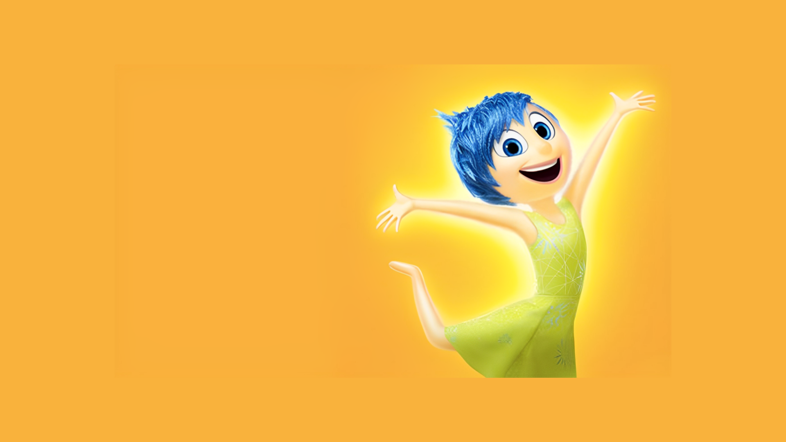
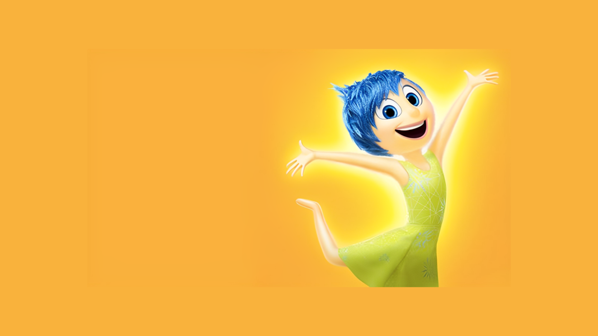
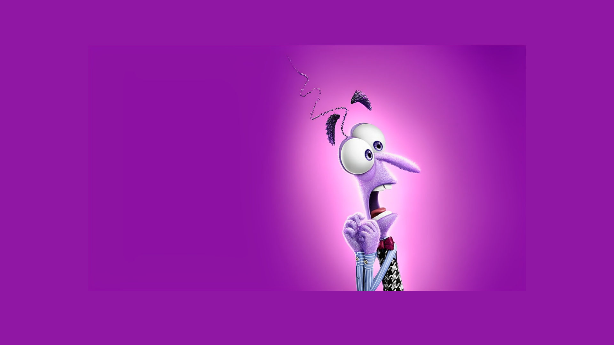
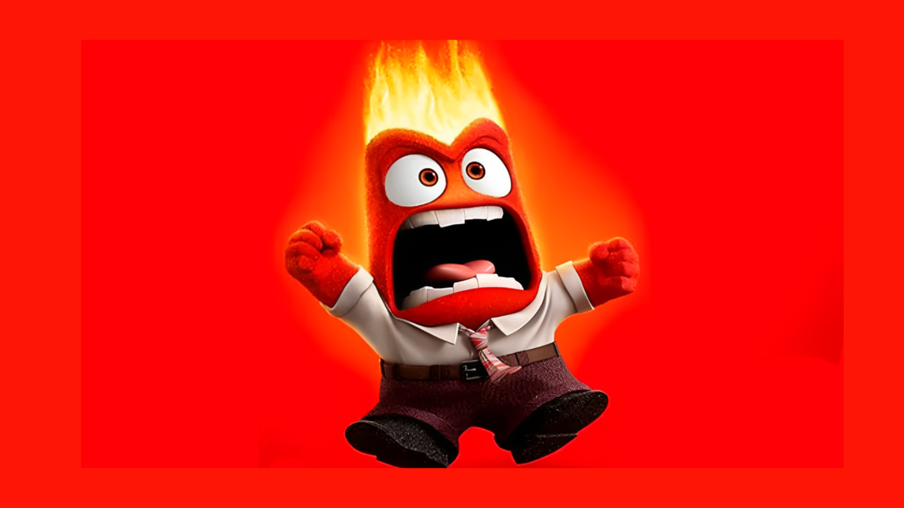
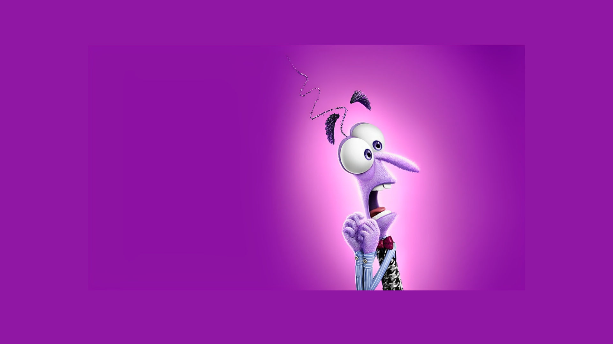
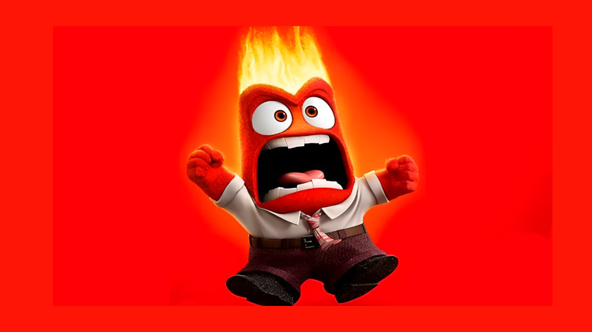

.png)
.png) 

.png) 



Oque são os Personagens principais do filme:
Em "Divertida Mente", os personagens principais são as emoções que vivem na mente de uma menina chamada Riley. Cada emoção é representada por um personagem distinto: tristeza, Alegria, Nojinho, Medo e Raiva.
Tristeza
Tristeza é melancólica e introspectiva. Embora muitas vezes pareça desanimada, ela desempenha um papel importante, ajudando Riley a lidar com situações difíceis e a compreender suas emoções mais profundas.
Alegria
Brilhante e otimista, Alegria é a líder das emoções de Riley. Ela está sempre sorrindo e busca ver o lado positivo de todas as situações, garantindo que Riley seja feliz.
Nojinho
Nojinho é crítica e seletiva, sempre atenta ao que considera inadequado ou desagradável. Ela protege Riley de situações sociais embaraçosas e garante que ela se mantenha fiel aos seus gostos e preferências.
Medo
Medo é ansioso e está sempre preocupado com os perigos em potencial. Ele age como um guardião da segurança de Riley, evitando que ela se machuque ou se meta em confusão
Raiva
Raiva é intenso e explosivo, reagindo rapidamente a situações injustas ou frustrantes. Ele se preocupa em garantir que Riley seja tratada de forma justa, mas sua impulsividade pode causar problemas.